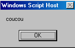
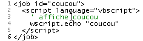
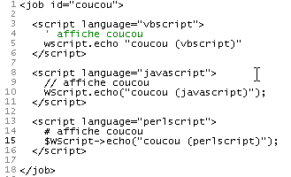
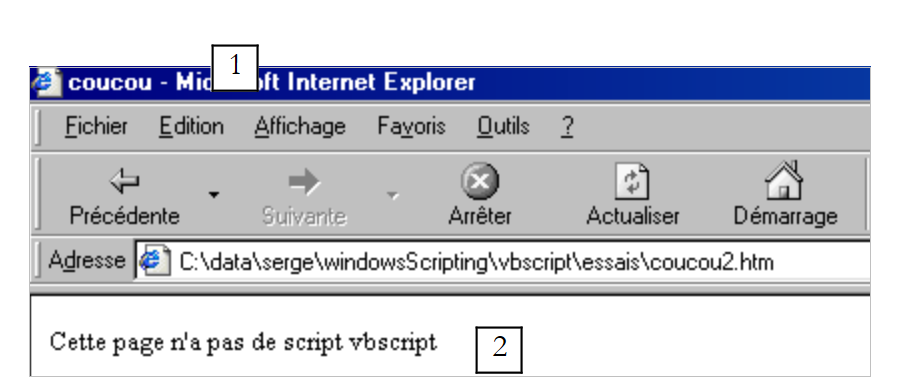
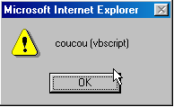
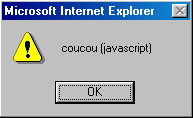
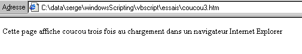

2. VBSCRIPT-Ausführungskontexte
2.1. Einleitung
Ein VBScript-Programm läuft nicht direkt unter Windows, sondern innerhalb eines Containers, der ihm einen Ausführungskontext und eine Reihe von spezifischen Objekten bereitstellt. Darüber hinaus kann das VBScript-Programm Objekte nutzen, die vom Windows-System bereitgestellt werden und als ActiveX-Objekte bezeichnet werden.
 |
In diesem Dokument werden wir zwei Container verwenden: den Windows Scripting Host, allgemein als WSH bezeichnet, und den Internet Explorer-Browser, im Folgenden manchmal als IE bezeichnet. Es gibt noch viele weitere. Beispielsweise sind MS-Office-Anwendungen Container für eine Variante von VB namens VBA (Visual Basic for Applications). Es gibt auch viele Windows-Anwendungen, die es Benutzern ermöglichen, die Grenzen der Anwendung zu überschreiten, indem sie Programme entwickeln können, die innerhalb der Anwendung laufen und deren spezifische Objekte nutzen.
Der Container, in dem das VBScript-Programm ausgeführt wird, spielt eine entscheidende Rolle:
- Die Objekte, die dem VBScript-Programm durch den Container zur Verfügung gestellt werden, variieren von Container zu Container. Beispielsweise stellt WSH einem VBS-Programm ein Objekt namens WScript zur Verfügung, das Zugriff beispielsweise auf die Netzwerkfreigaben und Drucker des Host-Rechners gewährt. Der IE hingegen stellt dem VBS-Programm ein Objekt namens Document zur Verfügung, das das gesamte angezeigte HTML-Dokument repräsentiert. Das VBS-Programm kann dieses Dokument dann bearbeiten. Excel hingegen stellt einem VBA-Programm Objekte zur Verfügung, die Arbeitsmappen, Arbeitsblätter, Diagramme usw. repräsentieren – also praktisch alle Objekte, die von Excel verarbeitet werden.
- Während die Objekte in einem Container einem VBScript-Programm seine volle Leistungsfähigkeit verleihen, können sie manchmal bestimmte Bereiche seiner Funktionalität einschränken. Beispielsweise kann ein im IE-Browser ausgeführtes VBScript-Programm aus Sicherheitsgründen nicht auf die Festplatte des Host-Computers zugreifen.
Daher muss bei der Erörterung der VBScript-Programmierung angegeben werden, in welchem Container das Programm ausgeführt wird.
Unter Windows ist VBScript nicht die einzige Sprache, die in WSH- oder IE-Containern verwendet werden kann. Sie können beispielsweise JScript (=JavaScript), PerlScript (=Perl), Python usw. verwenden. Viele dieser Sprachen scheinen auf den ersten Blick VBScript überlegen zu sein. VBScript hat jedoch einige entscheidende Vorteile:
- VB und seine Varianten VBScript und VBA sind auf Windows-Rechnern sehr weit verbreitet. Die Kenntnis dieser Sprache scheint unerlässlich.
- Es sind die einem Programm zur Verfügung stehenden Objekte und nicht die Sprache selbst, die es leistungsfähig machen. Viele dieser Objekte werden von den Containern bereitgestellt, nicht von den Sprachen selbst.
Ein Nachteil von VBScript ist, dass es nicht auf andere Systeme als Windows, wie beispielsweise Unix, übertragbar ist. Seine Konkurrenten – JavaScript, Perl und Python – sind es hingegen. Wenn Sie auf heterogenen Systemen arbeiten müssen, kann es von Vorteil oder sogar unerlässlich sein, auf verschiedenen Systemen dieselbe Sprache zu verwenden.
2.2. Der WSH-Container
Der WSH-Container (Windows Scripting Host) ermöglicht es, Programme, die in verschiedenen Sprachen geschrieben sind – wie VBScript, JavaScript, PerlScript, Python und anderen –, unter Windows auszuführen. Es gibt einen Standard, der eingehalten werden muss, damit eine Sprache innerhalb von WSH verwendet werden kann. Jede Sprache, die diesem Standard entspricht, kann innerhalb von WSH ausgeführt werden. Es ist denkbar, dass die Liste der Sprachen, die in WSH laufen, wachsen könnte. Ein Container stellt den von ihm ausgeführten Programmen Objekte zur Verfügung, die ihnen ihre eigentliche Leistungsfähigkeit verleihen. Dies führt dazu, dass die Unterschiede zwischen den Sprachen verschwimmen, da sie alle denselben Satz an Objekten verwenden. Die Wahl einer Sprache gegenüber einer anderen kann dann eher eine Frage der persönlichen Vorliebe als der Leistung sein.
Programme in WSH werden mit zwei ausführbaren Dateien ausgeführt: wscript.exe und cscript.exe. wscript.exe befindet sich in der Regel im Windows-Installationsverzeichnis, das üblicherweise als %windir% bezeichnet wird:
C:\ >echo %windir%
C:\WINDOWS
C:\>dir c:\windows\wscript.exe
WSCRIPT EXE 123 280 19/09/01 11:54 wscript.exe
L'exécutable cscript.exe se trouve lui sous %windir%\command :
C:\>dir c:\windows\cscript.* /s
Répertoire de C:\WINDOWS\COMMAND
CSCRIPT EXE 102 450 26/06/01 17:49 cscript.exe
Das „w“ in wscript steht für Windows, und das „c“ in cscript steht für Konsole. Ein Skript kann entweder mit wscript oder mit cscript ausgeführt werden. Der Unterschied liegt darin, wie Meldungen auf dem Bildschirm angezeigt werden:
- wscript zeigt sie in einem Fenster an
- cscript zeigt sie auf dem Bildschirm an
Hier ist ein Skript namens hello.vbs, das „hello“ auf dem Bildschirm anzeigt:

Öffnen wir ein DOS-Fenster und führen wir es nacheinander mit wscript und cscript aus:
DOS>wscript coucou.vbs

DOS>cscript coucou.vbs
Microsoft (R) Windows Script Host Version 5.6
Copyright (C) Microsoft Corporation 1996-2001. Tous droits réservés.
coucou
Der Unterschied zwischen den beiden Modi ist oben deutlich zu erkennen. In diesem Dokument werden wir fast ausschließlich den cscript-Konsolenmodus verwenden. Dieser Modus eignet sich für sogenannte „Batch“-Anwendungen, d. h. Anwendungen ohne Benutzereingaben über die Tastatur. Beachten Sie zwei Punkte in den vorherigen Ergebnissen:
- Wir sind davon ausgegangen, dass sich die ausführbaren Dateien wscript.exe und cscript.exe beide im „PATH“ des Rechners befinden, wodurch sie einfach durch Eingabe ihres Namens gestartet werden können. Wäre dies nicht der Fall, hätten wir hier schreiben müssen:
- Beachten Sie, dass die in diesem Beispiel und im gesamten Dokument verwendete WSH-Version 5.6 ist.
- Die Quelldatei des Skripts hat die Erweiterung .vbs. Dies ist die Erweiterung für ein VBScript-Skript; ein JavaScript-Skript wird durch die Erweiterung .js gekennzeichnet.
Das Programm „cscript“ verfügt über verschiedene Startoptionen, die durch Ausführen von „cscript“ ohne Argumente angezeigt werden können:
Das Argument //nologo unterdrückt die Anzeige des WSH-Banners:
2.3. Der Aufbau eines WSH-Skripts
Wir haben gerade unser erstes Skript gesehen: hello.vbs

Wir haben erwähnt, dass die Dateiendung .vbs auf ein VBScript-Skript hinweist. Dies ist jedoch keine zwingende Voraussetzung. Wir hätten das Skript auch in einer Datei mit der Endung .wsf in der folgenden, komplexeren Form ablegen können:

Die Ausführung dieses Skripts erzeugt die folgende Ausgabe:
Ein WSH-Skript kann verschiedene Sprachen mischen:

Die Ausführung dieses Skripts führt zu folgendem Ergebnis:
Wir werden die folgenden Punkte beachten:
- Der WSH-Container ist nicht an eine bestimmte Sprache gebunden. Ein WSH-Skript kann innerhalb einer Datei mit der Erweiterung .wsf verschiedene Sprachen mischen
- Das Skript wird dann in <job id="..."> ... </job>-Tags eingeschlossen
- Innerhalb der Anwendung (=Job) werden die von den verschiedenen Codeabschnitten verwendeten Sprachen mit <script language="...."> .... </script> markiert
- Diese Auszeichnungssprache hat einen Namen: XML, kurz für eXtended Markup Language. XML definiert selbst keine Tags, sondern Regeln für die Organisation von Tags. Hier sollten wir daher sagen, dass die in einem WSH-Skript verwendete Auszeichnungssprache dem XML-Standard folgt.
Im weiteren Verlauf werden wir VBScript ausschließlich in .vbs-Dateien verwenden.
2.4. Das WSCRIPT-Objekt
Der WSH-Container stellt den von ihm ausgeführten Skripten ein Objekt namens wscript zur Verfügung. Ein Objekt verfügt über Eigenschaften und Methoden:
 |
Ein Obj-Objekt verfügt über Pi-Eigenschaften, die seinen Zustand bestimmen. So kann ein Thermometer-Objekt beispielsweise eine Temperatureigenschaft haben. Diese Eigenschaft ist ein Aspekt des Zustands des Thermometers. Ein weiterer Aspekt könnte die maximale Temperatur Tmax sein, der es standhalten kann.
Das Obj-Objekt kann Methoden Mj besitzen, die es externen Akteuren ermöglichen, entweder:
- seinen Zustand zu bestimmen
- seinen Zustand zu ändern
So könnte unser Thermometer, sofern es elektronisch ist, eine Methode turnOn haben, die es einschaltet, eine weitere turnOff, die es ausschaltet, und eine weitere display, die die Gleichgewichtstemperatur anzeigt, sobald diese erreicht ist. In der Programmierung ist eine Methode eine Funktion, die Argumente entgegennehmen und Ergebnisse zurückgeben kann.
In VBScript werden die Pi-Eigenschaften eines Obj-Objekts als Obj.Pi geschrieben, und die Mj-Methoden werden als Obj.Mj geschrieben. Das wscript-Objekt in WSH ist ein wichtiges Objekt für die Methoden, die es Skripten zur Verfügung stellt. Mit seiner echo-Methode können Sie beispielsweise eine Meldung anzeigen. Die Syntax für diese Methode lautet wie folgt:
Die Werte der Argumente arg1, arg2, ..., argn werden dann in einem Fenster (bei Ausführung über wscript) oder auf dem Bildschirm (bei Ausführung über cscript unter DOS) angezeigt.
2.5. Der Internet Explorer-Container
Wir haben bereits erwähnt, dass der Internet Explorer als Container für ein VBScript dienen kann. Lassen Sie uns dies anhand eines einfachen Beispiels veranschaulichen. Nachfolgend finden Sie eine HTML-Seite (HyperText Markup Language) namens coucou2.htm, die kein VBScript enthält.
21

Wenn man sie direkt im Internet Explorer lädt (Datei/Öffnen), ergibt sich folgendes Ergebnis:
 |
Der Inhalt der Datei coucou2.htm zeigt uns, dass HTML eine Auszeichnungssprache ist. HTML zu kennen bedeutet, diese Tags zu kennen. Ihr Hauptzweck besteht darin, dem Browser mitzuteilen, wie ein Dokument angezeigt werden soll. HTML folgt nicht streng dem XML-Standard, ähnelt diesem jedoch.
In der Datei „coucou2.htm“ befinden sich zwei Informationen, die mit 1 und 2 gekennzeichnet sind. Wir haben sie ebenfalls in die resultierende Anzeige aufgenommen. Der Tag <title>...</title> bewirkte, dass Information 1 in der Titelleiste des Browsers angezeigt wurde, und der Tag <body>..</body> bewirkte, dass Information 2 im Dokumentbereich des Browsers angezeigt wurde.
Wir werden nicht weiter auf HTML eingehen. Ändern wir die Datei coucou2.htm, indem wir ein VBScript hinzufügen, und benennen sie in coucou1.htm um:

Das VBScript wurde innerhalb der Tags <head>...</head> platziert. Es hätte auch an anderer Stelle platziert werden können. Es zeigt „hello“ an, wenn die Seite zum ersten Mal geladen wird. Hier muss der Browser Internet Explorer sein, da nur dieser Browser ein Standardcontainer für VBScripts ist. Die resultierende Anzeige sieht wie folgt aus:

gefolgt von der normalen Anzeige der Seite:

Das ausgeführte Skript lautete wie folgt:

Während der WSH-Container dem Skript ein Objekt namens „wscript“ zur Verfügung stellte, das die Ausgabe über die Methode „echo“ ermöglichte, stellt IE dem Skript ein „window“-Objekt zur Verfügung, das die Ausgabe über die Methode „alert“ ermöglicht. Um also „hello“ anzuzeigen, schreiben wir in WSH „wscript.echo „hello““ und in IE „window.alert „hello““. Wir können hier auch zeigen, dass tatsächlich mehrere Sprachen innerhalb des IE-Containers verwendet werden können. Wir werden das bereits in WSH vorgestellte Beispiel auf einer Seite namens hello3.htm noch einmal aufgreifen:

Wenn der IE diese Seite lädt, zeigt er zunächst drei Informationsfenster an:
 |  |  |
bevor die endgültige Seite angezeigt wird:

2.6. WSH-Hilfe
WSH verfügt über ein Hilfesystem, das sich normalerweise im Ordner „C:\Program Files\Microsoft Windows Script\ScriptDocs“ befindet. Bei Version 5.6 von WSH heißt die Hilfedatei „SCRIPT56.CHM“. Doppelklicken Sie einfach auf diese Datei, um die Hilfe aufzurufen. Es kann praktisch sein, eine Verknüpfung dazu auf Ihrem Desktop zu haben.
Nach dem Start sehen Sie etwa Folgendes:

Sie enthält Hilfe zum WSH-Container sowie zu den Sprachen VBScript und JavaScript. Sie ist ein unverzichtbares Werkzeug sowohl für Anfänger als auch für erfahrene Programmierer. Es gibt mehrere Möglichkeiten, mit dieser Hilfe zu arbeiten:
- Sie sind sich nicht ganz sicher, wonach Sie suchen. Sie möchten einfach nur erkunden, was verfügbar ist. In diesem Fall können Sie die Registerkarte „Inhaltsverzeichnis“ oben verwenden. So können Sie beispielsweise sehen, was für VBScript verfügbar ist:

In der VBScript-Hilfe finden Sie viele Informationen, die in diesem Dokument nicht enthalten sind.
- Du kannst nach etwas Bestimmtem suchen, beispielsweise nach der Verwendung der VBScript-Funktion „MsgBox“. Verwende in diesem Fall die Registerkarte „Suchen“:

Die Hilfe zeigt alle Themen an, die mit dem Suchbegriff in Zusammenhang stehen. In der Regel sind die zuerst vorgeschlagenen Themen am relevantesten. Dies ist auch hier der Fall, wo das erste vorgeschlagene Thema das richtige ist. Doppelklicken Sie einfach darauf, um die Informationen zu diesem Thema anzuzeigen: